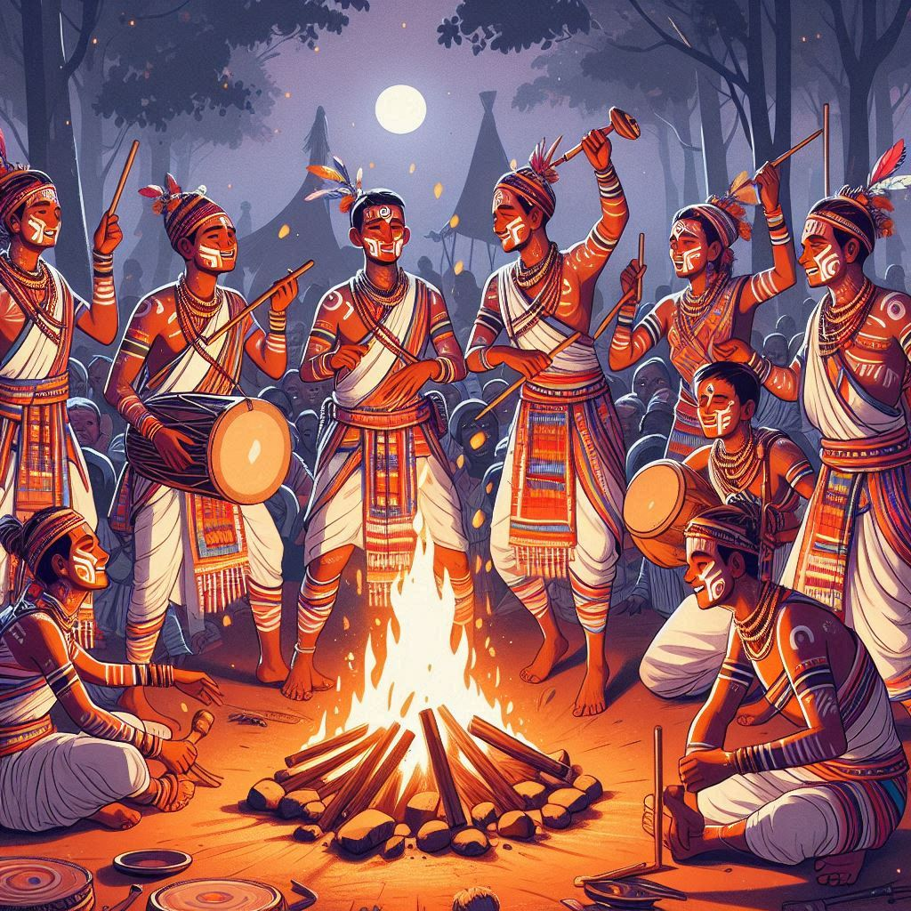
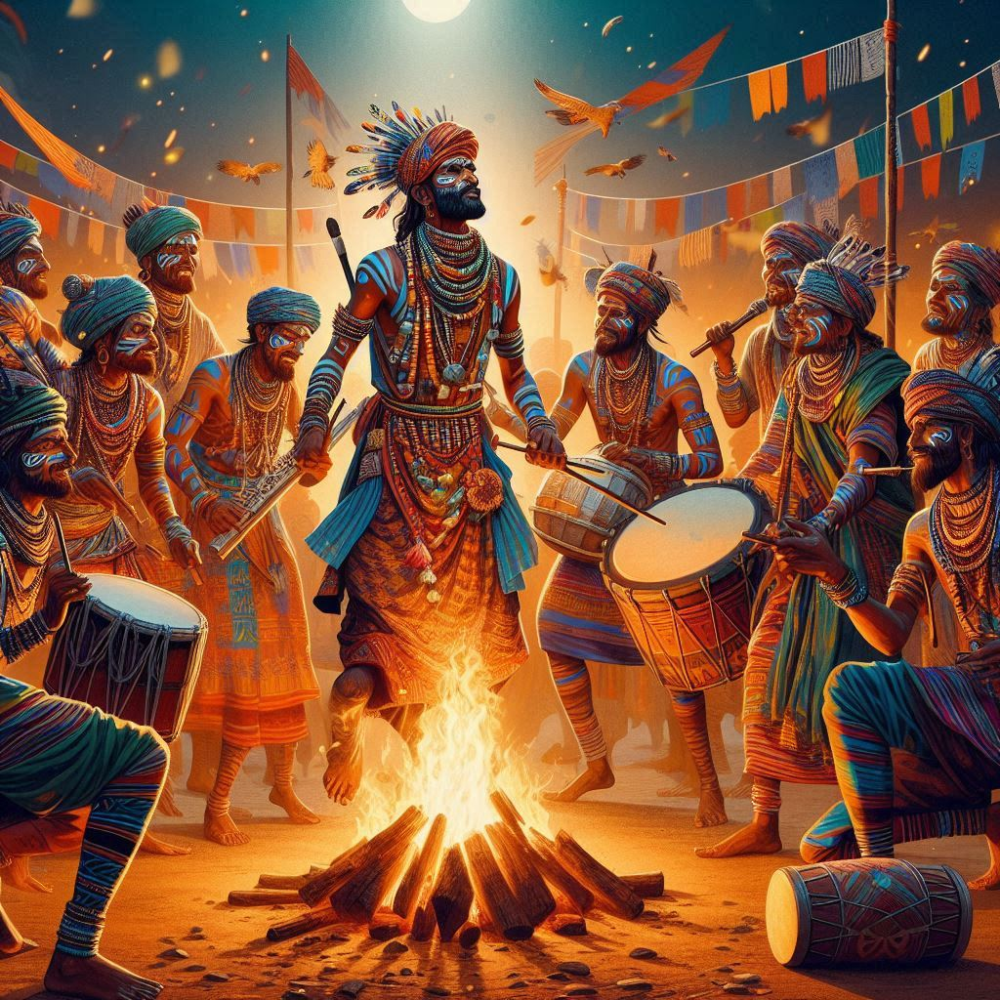

Jharkhand's culture is a rich tapestry woven with its tribal traditions, folklore, and historical
influences. The state's cultural identity is deeply connected to its indigenous communities, their art
forms, and spiritual practices. Here are key elements of Jharkhand's culture:
1. Tribal Heritage
- Indigenous Communities: Jharkhand is home to over 32 tribes, including the
Santhals, Oraons, Mundas, and Ho tribes, who preserve traditional customs.
- Language and Dialects: Tribal languages such as Santhali, Mundari, and Ho are
spoken by the indigenous people, with Hindi being the official language.
- Customs and Beliefs: The tribes worship natural elements like trees, rivers, and
hills, following animism and conducting rituals for important life events.
2. Dance and Music
- Folk Dances: Popular dances include Chhau (martial arts-inspired), Paika, Santhali,
and Jhumar dances, each with distinct rhythms and styles.
- Traditional Music: Folk songs accompanied by instruments like dhol, mandar, and
flute highlight Jharkhand’s cultural stories and community celebrations.
3. Festivals
- Sarhul: Celebrated in spring, Sarhul worships the sacred Sarna grove and marks the
blooming of Sal tree flowers.
- Karma: A festival honoring nature, fertility, and community strength, marked by
dances and songs around the Karam tree.
- Tusu Festival: A harvest festival with singing, rituals, and processions held
during Makar Sankranti.
- Chhath Puja: Celebrated by non-tribal communities, it involves prayers to the Sun
God and reflects the cultural fusion in Jharkhand.
4. Art and Handicrafts
- Dokra Art: Traditional metal casting using the lost-wax technique to create
intricate designs.
- Paitkar Paintings: Scroll paintings depicting tribal myths, nature, and local
stories.
- Stone Carvings and Bamboo Crafts: Jharkhand artisans excel at making bamboo crafts,
pottery, and decorative stone sculptures.


5. Traditional Attire
- Tribal Clothing: Colorful attire, often made from natural fibers. Santhali men wear
dhotis, and women wear sarees with intricate patterns.
- Ornaments: Silver jewelry, bead necklaces, body painting, and tattoos are common
forms of adornment among tribal communities.
6. Cuisine
- Rice-Based Diet: Dishes like Dhuska (rice pancakes) and Rugra (local mushroom) are
staple foods in the state.
- Local Specialties: Popular dishes include Handia (fermented rice drink), Thekua
(sweet dish), and Chilka Roti.
7. Religious and Social Practices
- Sarnaism: A belief system where tribes worship nature spirits and conduct rituals
in sacred groves (Sarna Sthal).
- Fairs and Melas: Traditional fairs like Karma Mela and Tusu Mela serve as platforms
for trade, cultural exchange, and community celebrations.
8. Unique Traditions and Practices
- Hunting Rituals: Sendra is a traditional hunting festival observed by some tribes.
- Folk Stories and Oral Traditions: The oral tradition of storytelling reflects the
wisdom, spirituality, and history of Jharkhand's tribal communities.
Conclusion
Jharkhand’s culture is a blend of indigenous beliefs, art forms, and communal traditions. It reflects the
state's deep connection to nature, a spirit of resilience, and the cultural richness passed down through
generations of its tribes.